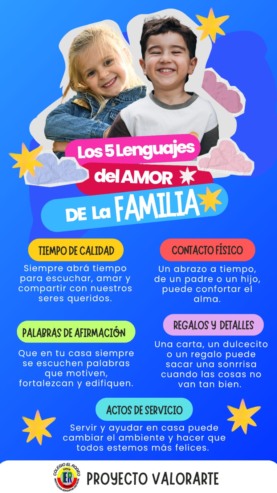

PREGUNTA PROBLEMA
¿CÓMO FORTALECER EL ÁMBITO SOCIO EMOCIONAL Y AFECTIVO DE LA COMUNIDAD EDUCATIVA DEL COLEGIO EL RODEO A PARTIR DE LA PROPUESTA DE LOS CINCO LENGUAJES DEL AMOR ?
Desde las dificultades afectivas y emocionales identificadas en la comunidad educativa del Colegio el Rodeo, se da cumplimiento al papel primordial del colegio de aportar al desarrollo integral de los sujetos atendiendo a la importante necesidad de acompañamiento en el área socio emocional y afectiva, tan afectada por el confinamiento y todo lo que trajo consigo la pandemia y por las dinámicas familiares observadas en nuestra comunidad, se pretende a partir de la propuesta metodológica DE LOS CINCO LENGUAJES DEL AMOR, potenciar el desarrollo de las habilidades socio emocionales y afectivas, que los niños, niñas y jóvenes van adquiriendo en su interacción con sus familias, el mundo y sus pares como agentes transformadores de su realidad.
INTRODUCCIÓN
Este proyecto está encaminado en rescatar y fortalecer los valores institucionales en nuestra comunidad educativa IED El Rodeo, teniendo en cuenta que son los principios básicos y fundamentales en la personalidad de cada individuo, entre algunos de ellos encontramos los más destacados como: unidad, solidaridad, empatía, gratitud y amor. Con la práctica de estos valores se conseguirá fortalecer el comportamiento y gozar de un ambiente que genere buenas relaciones humanas en el contexto familiar y escolar. Lo anterior, se logrará teniendo como sustento teórico los cinco lenguajes del amor de los niños, que permitirá la sensibilización de los padres, reconociendo la importancia de su rol en la unidad familiar y en el desarrollo armónico de sus hijos, también el fortalecimiento de los valores en el ambiente escolar y el reconocimiento de la labor de las personas de la institución a través de la gratitud.
JUSTIFICACIÓN
Una vez realizada la caracterización en la comunidad educativa, vemos la necesidad de profundizar en la comprensión y práctica de los valores que permitan evidenciar una mayor unidad familiar, el fortalecimiento del área socio emocional y afectiva de los estudiantes y de la empatía con sus semejantes, y de esta manera alcanzar un mayor impacto en la comunidad.
METODOLOGÍA
FORMACIÓN EN VALORES (REFLEXIÓN)
Es un proceso que se da en todos los momentos de la experiencia escolar y se expresa en las acciones y relaciones cotidianas entre maestros, alumnos y padres de familia. Por lo tanto al haber una interacción cotidiana con los estudiantes continuamente el docente y demás integrantes de la comunidad educativa deben incentivar la formación en valores en todo su quehacer ya que estas pautas diarias van moldeando un buen clima escolar.
ACTIVIDADES QUE DESARROLLA EL PROYECTO:
1. Organizacion y capacitacion al Grupo de multiplicadores de Valores conformado por estudiantes de preescolar a once.
2. Valor de la gratitud y solidaridad Conmemoracion día del trabajo.
3. Valor de la gratitud y solidaridad Conmemoracion día del maestro.
4. Talleres con estudiantes con apoyo de fundación Conviventia.
